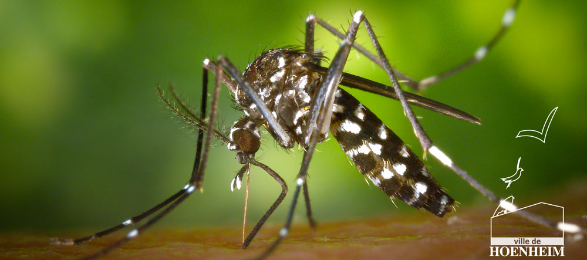

Dans le cadre du plan d’actions de lutte contre le moustique tigre engagé cette année par l’Eurométropole de Strasbourg, et suite à la candidature de la Ville de Hoenheim, les quartiers Crécerelles, Oiseaux, Hirondelles et La Lydia, rues de Mundolsheim et de l’Orangeraie ont été sélectionnés pour une lutte intégrée qui représente une superficie de 3,58 km².

Ainsi, dans ce périmètre, un premier traitement des avaloirs de rue (238 puisards) sera réalisé avec du BTI, un produit anti larve de moustiques, dans la semaine du 15 au 20 juillet prochain. Ce traitement sera réalisé par l’Entente Interdépartementale de Démoustication Rhône-Alpes (EID-RA), un cotraitant du syndicat de lutte contre les moustiques du Bas-Rhin (SLM67).
En complément, les habitants concernés seront destinataires d’informations sur les bons gestes à adopter sur cet insecte vecteur.
Afin d’évaluer l’impact de la démarche sur la présence de moustiques tigre et les nuisances associées perçues par les habitants de ce secteur, nous les invitons à signaler tout changement suite à ce traitement. Des citoyens peuvent également devenir ambassadeur sur ce sujet.
N’hésitez pas à faire remonter vos remarques et/ou votre volonté de devenir ambassadeur à services-techniques@ville-hoenheim.fr
D’autres actions ainsi que de la sensibilisation seront menées sur la commune pour lutter contre les moustiques tigres.
A ce jour, il n’existe aucune solution miracle qui ne mettrait pas en danger la santé du public et la biodiversité, y compris les appareils dits pièges dont la portée est malheureusement très limitée.